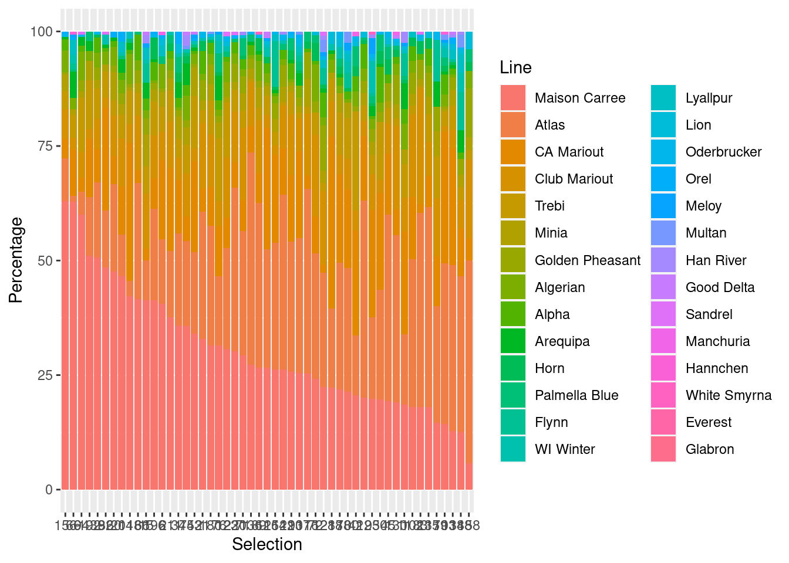
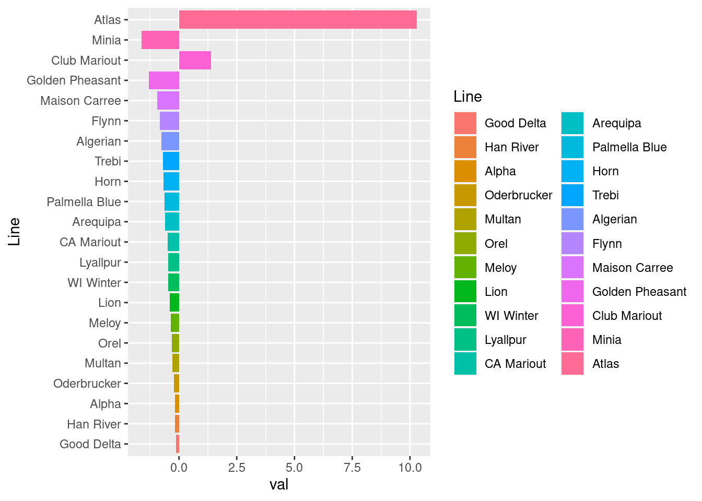

Data visualization in ggplot2
in R
With a shoutout to RMarkdown
Erik Amézquita
Division of Plant Sciences &
Technology, University of Missouri
2023-11-10
The art of data viz
- Data viz is both a science and an art
- For starters, you need to choose the right plot for the right kind of data
- Always keep the data to viz decision chart close to you
Grab the source Rmd file here.
- For this tutorial, I will do mostly bar plots with
geom_colinggplot2. - However, I will point out several tips that are applicable to any kind of ggplot.
- That’s the beauty of
ggplot2: once you understand one kind of plot, you’ve mastered all of them.
Some context of the data that will be used
Data comes from semi-supervised classification results of barley seeds according solely to their morphology. We used a combination of traditional and topological shape descriptors. More information in Améquita et al (2021).
TL; DR
- Back in the late 1920s, 28 different barley landraces representative of 28 different climates in the Euroasian and North African continents were brought to California.
- These seeds constituted the \(F_0\)s, or parental seeds.
- All of them were pairwised crossed to form \(F_1\)s and \(F_2\)s.
- These were planted in separate plots in a single field.
- Nature be nature for 58 generations.

- For this experiment, we only had access to seeds from \(F_0\), \(F_{18}\), and \(F_{58}\).
- For some odd reason, it was originally labeled as 0, 1, 7 respectively —the rest of file naming and wrangling rolled with it.
- A machine learning algorithm was trained on all the parental seeds.
- Then this model was used to classify the rest of the progeny based on their shape alone.
- Observe how shape changes over time.

- We want to plot nicely all these classification results
Now for the actual workshop
First, a word on housekeeping
- Keeping your files organized will go a long way: your future self will deeply appreciate it.
- Naming your folders and files right is quite important:
- Only lowercase
- No spaces; use
_underscores instead - No symbols:
~, #, @, ?, ", (, ], >etc. - No accents or non-standard characters:
é, ß, æ, ¢, ºetc.
- Keep all the files related to your project in a single folder.
- Inside that folder, create all the necessary subfolders
code- Name your scripts with a number that indicates which step they are part of in the overall pipeline
raw- Raw data.
- You never modify files in here
proc- Processed data e.g. PCA of the raw data
- And so on and so forth
- Once all our project files are nicely structured, it is convenient to always root our RStudio session to wherever we stored our scripts.
- Define a source
srcdirectory (where data is store) - And a destination
dstdirectory (where data/plots will be stored)
Load the necessary libraries
ggplot2: the basis of all pretty plots.reshape2: tomeltstuff, ie. switch from short to long dataframe formats.dplyr: to sort the dataframe
You can also load tidyverse to make sure you have all
you need. magrittr might come handy (although personally I
don’t know how to use it properly.)
Let’s define some color palettes
- These are some of the color palettes I tend to use.
- These are all color-blind friendly
- You should check mor color-blind friendly palettes from here.
- I will switch to maize-inspired palettes soon (also color-blind friendly, I was told) with MaizePal.
# Bang Wong
colors_wong <- c('#E69F00','#52ADE0','#009E73','#F0E442',
'#0072B2','#D55E00','#CC79A7','#444444')
colors_def <- c('#D81B60', '#1E88E5', '#FFC107', '#004D40')
# Paul Tol
colors_tol <- c('#332288', '#117733', '#44AA99', '#88CCEE', '#DDCC77', '#CC6677')
colors_bright <- c('#4477AA', '#66CCEE', '#228833', '#CCBB44', '#EE6677', '#AA3377')
colors_high <- c('#F0E442', '#0005FF', '#D50000', '#FFFFFF')
colors_high <- c('#F0E442', '#0072B2','#D55E00', '#FFFFFF')
colors_high <- c('#66CCEE', '#CCBB44','#AA3377', '#444444')Load the metadata
- This file only has metadata regarding the land races, field, generation, scan number, and other stuff for the specific file to plot later
- Don’t worry much about it.
founders <- read.csv(paste(src, 'corrected_barley_metadata.csv', sep=''))
founders_names_original <- sort(unique(founders$Founder))[-1]
print(founders_names_original)## [1] "Algerian" "Alpha"
## [3] "Arequipa" "Atlas"
## [5] "California Mariout (81A)" "Club Mariout"
## [7] "Everest" "Flynn"
## [9] "Glabron" "Golden Pheasant"
## [11] "Good Delta (104)" "Han River"
## [13] "Hannchen" "Horn"
## [15] "Lion" "Lyallpur"
## [17] "Maison Carree (Carre 42)" "Manchuria"
## [19] "Meloy" "Minia"
## [21] "Multan" "Oderbrucker"
## [23] "Orel" "Palmella Blue (79B)"
## [25] "Sandrel" "Trebi"
## [27] "White Smyrna" "Wisconsin Winter"Big ggplot2 tip
- It is much easier to change the original dataframe than to make changes in the ggplot
- For example, let’s change the name of some of the original land races.
- Keep the original names around, though
founders_names <- founders_names_original
founders_names[5] <- 'CA Mariout'
founders_names[11] <- 'Good Delta'
founders_names[17] <- 'Maison Carree'
founders_names[24] <- 'Palmella Blue'
founders_names[28] <- 'WI Winter'
print(founders_names)## [1] "Algerian" "Alpha" "Arequipa" "Atlas"
## [5] "CA Mariout" "Club Mariout" "Everest" "Flynn"
## [9] "Glabron" "Golden Pheasant" "Good Delta" "Han River"
## [13] "Hannchen" "Horn" "Lion" "Lyallpur"
## [17] "Maison Carree" "Manchuria" "Meloy" "Minia"
## [21] "Multan" "Oderbrucker" "Orel" "Palmella Blue"
## [25] "Sandrel" "Trebi" "White Smyrna" "WI Winter"Choose a specific file to plot
- Let’s load a file that has the classification results based on the machine learning model trained with founder seeds.
- Specify a generation from the metadata (say
gen 7) - We know that that
gen 7actually meansgen 58, so keep another variable for that d,TT,info_type, andscaledare variables from hyperparameters used by the machile learning model. You can ignore these- Make sure it is a dataframe structure.
Big ggplot2 tip
ggplothates matrices: it is built to take dataframes instead.ggplotalso ignores named rows: have an extra column as name of rows instead.
gen <- 7
genn <- 58
d <- 158
TT <- 16
info_type <- 'combined'
scaled <- 'topounscaled'
filename <- paste(src, 'gen', gen, '_svm_', info_type, '_d', d,'_T',TT,'_',scaled,'.csv', sep='')
progeny <- read.csv(filename)First plot: a simple bar plot
- We want to visualize the percentage of seeds classified according to each land race.
- Put those percentages into a matrix with named rows
- The named rows are important, as they will help us later in the plot
counts <- matrix(0, ncol=2, nrow=length(founders_names))
rownames(counts) <- founders_names
for(i in 1:length(founders_names_original))
counts[i,1] = sum(progeny$Founder == founders_names_original[i])
counts[,2] <- (counts[,1]/dim(progeny)[1]*100)- Say we want the bar plot to be ordered from highest percentage to lowest
- As the tip/rule says, order the data now instead of dealing with the plot order later
- As the other tip/rule says, make an extra column with the names of the corresponding accession
Big ggplot2 tip
- Whenever you have categorical data that you want to plot separately, make it a factor type
- The order of the factor levels will determine the order in which those categorical variables will be plotted
- In this case, the land race name is categorical
- And we want to plot each land race as an individual bar
- And the levels are ordered from highest to lowest land race percentage
- Also define a vector of colors, one per land race (bar)
ordered <- counts[base::order(counts[,1], decreasing=TRUE),]
rownames(ordered) <- founders_names[rank(rownames(ordered))]
genotypes <- rownames(ordered)
df <- as.data.frame(ordered)
df$Line <- rownames(df)
df$Line <- factor(df$Line, levels=genotypes)
fcolors <- rep(colors_wong, length.out = nrow(df))Finally, the plot
Do a
ggplot(df)to tell ggplot what dataframe to plotThe
aesaesthetics tell it important informationEverything is set with the name of the columns of your dataframe
Always check the relevant details from the official ggplot documentation on what is an aesthetic and what not.
In this case, we set the x-axis to be land races
y-axis are the total percentages
geom_colmakes column plots (not to be confused withgeom_barspecifically made for histograms)Color each bar according to the land-race
Once you have the kind of plot you want, you can go crazy with the rest - Specific colors/palette to use - Theme - Tightness of the axis - Legends - Labels - etc.
ggplot2 works layer by layer
- Also: It is convenient to script titling/file naming if you will be generating several plots of the same kind
titlename <- paste('Gen ', genn, ' distribution (UMAP ', stringr::str_to_title(info_type),', ', scaled,')', sep='')
p <- q +
scale_fill_manual(values = fcolors) +
theme_bw() +
scale_y_continuous(expand = expansion(mult = c(0, .1))) +
theme(plot.title = element_text(hjust = 0.5, vjust = 0, size=20),
axis.text.x = element_text(size = 15, hjust = 0.5, vjust=0.5, angle=90),
axis.text.y = element_text(size = 11),
axis.title = element_text(size=15),
legend.position = 'none') +
ylab('No. of predicted seeds (%)') +
ggtitle(titlename) +
xlab('Accession')
p
Save your pretty plot
- Use
ggsaveand you favorite format - Loseless (pdf, svg) vs lossy (png, jpg)
- Automate also the naming of the plot file
w <- 8
h <- 9
filename <- paste(dst,'histogram_',info_type, '_gen',gen,'_d',d,'_T',TT,'_',scaled,'_vert',sep='')
print(filename)## [1] "../results/histogram_combined_gen7_d158_T16_topounscaled_vert"ggplot2::ggsave(paste(filename, '.pdf', sep=''), plot=p, device='pdf', width=w, height=h)
ggplot2::ggsave(paste(filename, '.png', sep=''), plot=p, device='png', width=w, height=h)
w <- 12
h <- 6
filename <- paste(dst,'histogram_',info_type, '_gen',gen,'_d',d,'_T',TT,'_',scaled,'_horz',sep='')
print(filename)## [1] "../results/histogram_combined_gen7_d158_T16_topounscaled_horz"Second plot: stacked bar plot
- The plots above gives us the distribution of land races across the whole field.
- We want to plot the percentage of land race shape for each parcel.
- Each parcel is a selection in the original data
- Create a matrix of percentages
selection <- sort(unique(progeny$Selection))
counts <- matrix(0, nrow=length(selection), ncol=length(founders_names))
for(i in 1:nrow(counts)){
foo <- progeny[progeny$Selection == selection[i], ]
for(j in 1:ncol(counts)){
counts[i,j] <- (sum(foo$Founder == founders_names_original[j])/nrow(foo)*100)
}
}- Remember the tip: we want a data frame instead
- And a column with the names of the parcels
dg <- as.data.frame(counts)
colnames(dg) <- founders_names
rownames(dg) <- selection
dg$Selection <- rownames(dg)- Remember the tip: sort the data before plotting
- We will sort the parcel based on their content of the Mariout Carree land race
- Make sure the parcels are treated as categorical data by declaring them factors
- The levels of the factors are sorted as we want
dga <- dplyr::arrange(dg, dplyr::desc(data.frame(base::rowSums(dg[genotypes[1:1]]))))
dga$Selection <- factor(dga$Selection, levels=dga$Selection[1:nrow(dga)])
dga <- dplyr::select(dga, c(colnames(dga)[rank(genotypes)], 'Selection'))Big ggplot2 tip
ggplot2prefers long format over the short format- Each row has a single numerical value to plot with several qualifiers
- We use
meltto do this by telling it what stuff is numerical and what categorical and how to name columns
Finally, the plot
- Similar to the one before
- x-axis are parcels
- y-axis are percentages
- Declare a non-histogram bar plot with
geom_col - Color the columns based on the land race
- Stack the columns based on the x-axis/parcel (default behavior)
- Stack them with the largest bar at the bottom
(
reverse=TRUE)
q <- ggplot(dgm, aes(x=Selection, y=Percentage)) +
geom_col(aes(fill=Line), position = position_stack(reverse = TRUE))
q
- Then customize the rest
titlename <- paste('Gen ', genn, ' distribution (UMAP ', stringr::str_to_title(info_type),', ', scaled,')', sep='')
p <- q +
scale_fill_manual(values = fcolors, guide = guide_legend(ncol = 7)) +
theme_bw() +
scale_y_continuous(expand = expansion(mult = c(0, .1))) +
theme(plot.title = element_text(hjust = 0.5, vjust = 0, size=20),
axis.text.x = element_blank(),
axis.text.y = element_text(size = 11),
axis.title = element_text(size=15),
legend.text = element_text(size=11),
legend.key.size = unit(0.75, 'cm'),
legend.title = element_text(angle=90, vjust=0.5, hjust=0.5),
legend.position = "top"
) +
ylab('No. of predicted seeds (%)') +
ggtitle(titlename) +
xlab('Selection') +
labs(fill = "Accession")
p- And also save the plots
w = 14
h = 8
filename <- paste(dst, 'selection_',info_type,'_gen',gen,'_d',d,'_T',TT,'_',scaled, sep='')
print(filename)## [1] "../results/selection_combined_gen7_d158_T16_topounscaled"Third plot: compare two bar plots
- Load both classification results of \(F_{18}\) and \(F_{58}\)
- Notice that I am loading the same file from above, so I am duplicating data
- Trade-off of memory waste vs code readability.
gen <- 1
genn <- 18
filename <- paste(src,'gen', gen, '_svm_', info_type, '_d', d,'_T',TT,'_',scaled,'.csv', sep='')
progeny1 <- read.csv(filename)
gen <- 7
genn <- 58
filename <- paste(src,'gen', gen, '_svm_', info_type, '_d', d,'_T',TT,'_',scaled,'.csv', sep='')
progeny7 <- read.csv(filename)- Do the same counts as above but save the final results in different dataframes
- The land races are made factor data
- Notice that the factor levels are the same for both cases
- Each data frame will have an extra column indicating its generation
counts <- matrix(0, ncol=2, nrow=length(founders_names))
rownames(counts) <- founders_names_original
for(i in 1:length(founders_names_original))
counts[i,1] = sum(progeny1$Founder == founders_names_original[i])
counts[,2] <- (counts[,1]/dim(progeny1)[1]*100)
ordered <- counts[base::order(counts[,1], decreasing=TRUE),]
rownames(ordered) <- founders_names[rank(rownames(ordered))]
df1 <- as.data.frame(ordered)
df1$Line <- rownames(df1)
df1$Line <- factor(df1$Line, levels=genotypes)
df1$Gen <- 18
for(i in 1:length(founders_names_original))
counts[i,1] = sum(progeny7$Founder == founders_names_original[i])
counts[,2] <- (counts[,1]/dim(progeny7)[1]*100)
ordered <- counts[base::order(counts[,1], decreasing=TRUE),]
rownames(ordered) <- founders_names[rank(rownames(ordered))]
df7 <- as.data.frame(ordered)
df7$Line <- rownames(df7)
df7$Line <- factor(df7$Line, levels=genotypes)
df7$Gen <- 58Big ggplot2 tip
- You can only plot one dataframe at a time
- Combine data frames into a single one if necessary
- Row bind (
rbind) works easily if all your dataframes have the same structure and columns - Convert the generation to factor so it is treated as a categorical variable
- Remember the order of the levels determines the order in the plot
Now the plot
- I want two stacked bars instead this time, one per generation
- x-axis are the percentages
- y-axis are the generations
- color the bars according to the landrace
- stack the columns, with the largest percentage on the left
q <- ggplot2::ggplot(df, aes(y=Gen, x=V2)) +
geom_col(aes(fill=Line), position = position_stack(reverse = TRUE))
q- And now make a bunch of aesthetic changes
titlename <- paste('Comparison of Generation distributions (UMAP ',
stringr::str_to_title(info_type), ', ',
scaled, ')', sep='')
p<- q +
scale_fill_manual(values = fcolors, guide = guide_legend(ncol = 7)) +
theme(plot.title = element_text(hjust = 0.5, vjust = 0, size=20),
axis.text.x = element_text(size = 11, angle=0),
axis.text.y = element_text(size = 11),
axis.title = element_text(size=15),
legend.text = element_text(size=11),
legend.title = element_text(angle=90, vjust=0.5, hjust=0.5),
legend.position = "top"
) +
xlab('No. of predicted seeds (%)') +
ggtitle(titlename) +
ylab('Generation') +
labs(fill = "Accession")
p- And save the plots
w = 10
h = 3
filename <- paste(dst, 'comparison_generations_',info_type,'_',scaled,'_d',d,'_T',TT,'_horz', sep='')
print(filename)## [1] "../results/comparison_generations_combined_topounscaled_d158_T16_horz"ggplot2::ggsave(paste(filename, '.pdf', sep=''), plot=p, device='pdf', width=w, height=h)
ggplot2::ggsave(paste(filename, '.png', sep=''), plot=p, device='png', width=w, height=h)- The same plot but now vertical
- Notice that we simply changed the
xandyvalues at the beginning - The titlename was shortened
- The titlename has a
\nthat indicates to break the line
- Notice that we simply changed the
titlename <- 'Comparison of\nGeneration distributions'
p <- ggplot2::ggplot(df, aes(x=Gen, y=V2)) +
geom_col(aes(fill=Line), position = position_stack(reverse = TRUE)) +
scale_fill_manual(values = fcolors, guide = guide_legend(ncol = 1, reverse=TRUE)) +
theme(plot.title = element_text(hjust = 0.5, vjust = 0, size=15),
axis.text.x = element_text(size = 11, angle=0),
axis.text.y = element_text(size = 11),
axis.title = element_text(size=15),
legend.text = element_text(size=11),
legend.position = "right"
) +
ylab('No. of predicted seeds (%)') +
ggtitle(titlename) +
xlab('Generation') +
labs(fill = "Accession")
p- Save the plot
w = 4
h = 8
filename <- paste(dst,'comparison_generations_',info_type,'_',scaled,'_d',d,'_T',TT,'_vert', sep='')
print(filename)## [1] "../results/comparison_generations_combined_topounscaled_d158_T16_vert"Fourth plot: bar plots representing annotated differences
- Make a new dataframe with percentage differences between generations for each land race
- Consider only land races that differ by at least 0.1%
- Sort by absolute difference values
- As the tip says, make sure the dataframe reflects exactly what we want before even considering plotting
- It will be useful to keep track how we shift indices around when sorting
- As the tip says, the land races must be factors
dindx <- base::which(base::abs(df7$V2 - df1$V2) > 0.1)
oindx <- base::order(abs(df7$V2 - df1$V2)[dindx])
diff <- data.frame(val=(df7$V2 - df1$V2)[dindx][oindx], Line=genotypes[oindx])
diff$Line <- factor(diff$Line, levels=diff$Line)- Basis plot as usual:
- x-axis are the percentage differences
- y-axis are the land races (only those that reflect a percentage difference larger than 0.1%)
- Color by land race

- Now add all the artistic modifications
- Notice that the colors in
scale_fill_manualfollow the sorting indices from above - That way colors stay consistent
- Give extra space around the x-axis with
scale_x_continuous(it will be handy later)
titlename <- paste('Percentage changes from Gen 18 to Gen 58 (UMAP ',
stringr::str_to_title(info_type), ', ',
scaled, ')', sep='')
p <- q +
scale_fill_manual(values = fcolors[dindx][oindx]) +
theme_bw() +
scale_x_continuous(expand = expansion(mult = c(0, 0.01)), limits=c(-3,12)) +
theme(plot.title = element_text(hjust = 0.5, vjust = 0, size=20),
axis.text.x = element_text(size = 15, hjust = 0.5, vjust=0.5),
axis.text.y = element_text(size = 15),
axis.title = element_text(size=18),
axis.title.x = element_text(hjust=0.5),
legend.position = 'none') +
ylab('Accession') +
ggtitle(titlename) +
xlab('Difference of percentages across generations')
p
- Annotate the rounded values of each bar for easier read
- Color the number depending on whether it is positive or negative
- Create an additional vector of
'black's and'red's depending on the value sign - Round the difference values to 2 digits with
round - Convert the values to text using
paste
cols <- ifelse(diff$val > 0, 'black', 'red')
p <- p +
geom_text(aes(label = paste(round(val,2)),
hjust = ifelse(val > 0, -0.1, 1.03)),
size = 6,
color = cols)
p- Save the plots
w = 16
h = 7.5
filename <- paste(dst, 'diff_',info_type, '_', scaled, '_d', d,'_T',TT,sep='')
print(filename)## [1] "../results/diff_combined_topounscaled_d158_T16"Fifth plot: compare the percentage differences for each parcel
- Some parcels were lost over time
- Plot only the parcels from \(F_{58}\) (if we had seed there 58 generations later is because we had seed for the \(F_{18}\); notice that the other way around is not necessarily true.)
- Similar code when looking at the parcels of a single generation
- We just end up with two different melted dataframes
selection7 <- sort(unique(progeny7$Selection))
counts <- matrix(0, nrow=length(selection7), ncol=length(founders_names))
for(i in 1:nrow(counts)){
foo <- progeny1[progeny1$Selection == selection7[i], ]
for(j in 1:ncol(counts)){
counts[i,j] <- (sum(foo$Founder == founders_names_original[j])/nrow(foo)*100)
}
}
dg <- as.data.frame(counts)
colnames(dg) <- founders_names
rownames(dg) <- selection7
dg$Selection <- rownames(dg)
dga <- dplyr::arrange(dg, dplyr::desc(data.frame(base::rowSums(dg[genotypes[1:1]]))))
dga$Selection <- factor(dga$Selection, levels=dga$Selection[1:nrow(dga)])
dga <- dplyr::select(dga, c(colnames(dga)[rank(genotypes)], 'Selection'))
dgm1 <- reshape2::melt(dga, id.vars='Selection', variable.name='Line', value.name='Percentage')
# Repeat for F58
counts <- matrix(0, nrow=length(selection7), ncol=length(founders_names))
for(i in 1:nrow(counts)){
foo <- progeny7[progeny7$Selection == selection7[i], ]
for(j in 1:ncol(counts)){
counts[i,j] <- (sum(foo$Founder == founders_names_original[j])/nrow(foo)*100)
}
}
dg <- as.data.frame(counts)
colnames(dg) <- founders_names
rownames(dg) <- selection7
dg$Selection <- rownames(dg)
dga <- dplyr::arrange(dg, dplyr::desc(data.frame(base::rowSums(dg[genotypes[1:1]]))))
dga$Selection <- factor(dga$Selection, levels=dga$Selection[1:nrow(dga)])
dga <- dplyr::select(dga, c(colnames(dga)[rank(genotypes)], 'Selection'))
dgm7 <- reshape2::melt(dga, id.vars='Selection', variable.name='Line', value.name='Percentage')- Add an extra column indicating generation for each dataframe
- Concatenate both dataframes
dgm1$Gen <- 18
dgm7$Gen <- 58
dgm <- rbind(dgm1, dgm7)
dgm$Gen <- factor(dgm$Gen, levels = c(18,58))
dgm$Selection <- factor(dgm$Selection, levels = selection7)A big plot
We will add an extra dimension through facet_wrap: this
allows multiplots - x-axis are the generations - y-axis are the
percentages of each land race - each subplot (facet) corresponds to a
different parcel - facet_wrap uses vars()
instead of aes() but works pretty much the same
q <- ggplot2::ggplot(dgm, aes(y=Percentage, x=Gen)) +
geom_col(aes(fill=Line), position = position_stack(reverse = TRUE)) +
facet_wrap(facet=vars(Selection), ncol=17)
q- And once again, we then refine the labels and titles and colors and …
titlename <- paste('Comparison of lines across generations (UMAP ',
stringr::str_to_title(info_type), ', ',
scaled, ')', sep='')
p <-q +
scale_fill_manual(values = fcolors, guide = guide_legend(ncol = 7)) +
theme(plot.title = element_text(hjust = 0.5, vjust = 0, size=20),
axis.text.x = element_text(size = 11, angle=0),
axis.text.y = element_text(size = 11),
axis.title = element_text(size=15),
legend.text = element_text(size=11),
legend.key.size = unit(0.75, 'cm'),
legend.title = element_text(angle=90, vjust=0.5, hjust=0.5),
legend.position = "top"
) +
ylab('No. of predicted seeds (%)') +
ggtitle(titlename) +
xlab('Generation') +
labs(fill = "Accession")
p- Save the plot
w = 16
h = 10
filename <- paste(dst, 'comparison_lines_',info_type,'_',scaled,'_d',d,'_T',TT,'_horz', sep='')
print(filename)## [1] "../results/comparison_lines_combined_topounscaled_d158_T16_horz"ggplot2::ggsave(paste(filename, '.pdf', sep=''), plot=p, device='pdf', width=w, height=h)
ggplot2::ggsave(paste(filename, '.png', sep=''), plot=p, device='png', width=w, height=h)- Same but rotated
- Notice that we only have to switch
yandxinggplot - And modify the number of columns in the
facet_wrap
p <- ggplot2::ggplot(dgm, aes(y=Gen, x=Percentage)) +
geom_col(aes(fill=Line), position = position_stack(reverse = TRUE)) +
facet_wrap(facet=vars(Selection), ncol=3) +
scale_fill_manual(values = fcolors, guide = guide_legend(ncol = 7)) +
theme(plot.title = element_text(hjust = 0.5, vjust = 0, size=20),
axis.text.x = element_text(size = 11, angle=90),
axis.text.y = element_text(size = 11),
axis.title = element_text(size=15),
legend.text = element_text(size=11),
legend.key.size = unit(0.75, 'cm'),
legend.title = element_text(angle=90, vjust=0.5, hjust=0.5),
legend.position = "top"
) +
xlab('No. of predicted seeds (%)') +
ggtitle(titlename) +
ylab('Generation') +
labs(fill = "Accession")
p- Save and enjoy
w = 11
h = 16
filename <- paste(dst, 'comparison_lines_',info_type,'_',scaled,'_d',d,'_T',TT,'_vert', sep='')
print(filename)## [1] "../results/comparison_lines_combined_topounscaled_d158_T16_vert"